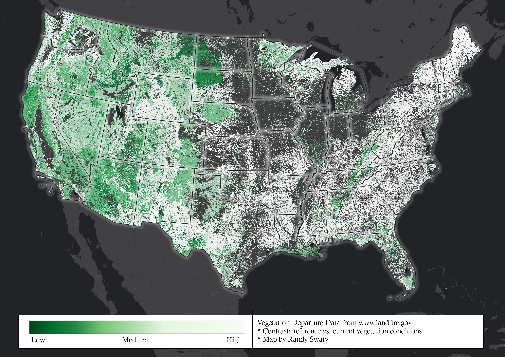

Intro to LANDFIRE for TNC Climate Science Team
Goals/wins
For our meeting success to me means:
- Getting to know each other a bit
- Introducing LANDFIRE and TNC’s LANDFIRE team, plus some products
- We decide to have a follow up to brainstorm potential collaboration
LANDFIRE Program
LANDFIRE is a shared interagency wildland fire management data program across the United States and Territories. Leadership, management, and oversight are through the U.S. Department of Agriculture Forest Service - Fire and Aviation Management and the U.S. Department of the Interior – Office of Wildland Fire.

LANDFIRE provides more than twenty landscape-scale geospatial products of biological and ecological data, including data such as (900+) vegetation types and (13/40) fire behavior fuel models that support all-lands planning, fire and natural resources management, operations, analyses and assessments.
The Nature Conservancy’s LANDFIRE team
- Is 6 people housed in North America Science. Meet them here.
- We have a cooperative agreement with the US Forest Service where we are to provide user support, help maintain historical ecosystem data and models, and share science back to the broader LANDFIRE team and community
- Our funding is exclusively for US work, however almost all of us have Coda fellowships and/or do international work when possible in the One Conservancy spirit
Tour of some of the datasets
As noted above LANDFIRE produces 20+ datasets, most are 30M pixel sized rasters. For today we will focus on 5 datasets and the outputs of the state-and-transition models. To do so we will lean on a rapid landscape assessment we completed for the Ely Bureau of Land Management District located in eastern Nevada.
Follow along at https://thenatureconservancy.github.io/ely_blm/
Looking at the past
While we fully believe in climate change, invasive exotics, resource extraction, etc., we also believe that understanding the past has some value:
- Baseline for comparison
- Exploring the potential of a site
- As a structured way to explore management and change
LANDFIRE captures historical ecosystem distributions, structure and function, and baseline information in 3 main products in the “Biophysical Settings (BpS)”:
- Spatial data, as demonstrated at https://thenatureconservancy.github.io/ely_blm/past.html
- Descriptions delivered multiple ways including at https://www.landfirereview.org/search.php and Randy’s very drafty very incomplete Shiny App
- State-and-Transition Models probably best learned about at https://thenatureconservancy.github.io/landfiremodels/. Also see Blankenship et al (2021) and Swaty et al.(2021).
Main Takeaways
- BpSs map the dominant vegetation systems prior to European colonization. Sort of a ‘potential vegatation type’ with disturbance added in
- There are up to 5 succession classes described and modeled for each BpS
- We used modeling to estimate how much of each succession class would have been on the landscape historically. We use the descriptions to map and quantify how much of each class is on the landscape today, which sets us up for Vegetation Departure, a metric that compares historic to current amounts of each succession class
- Descriptions and models capture historical disturbance regimes including fire, wind/weather/stress, insects and pests, and others (e.g. bison wallowing)
Present
LANDFIRE Maps multiple “Existing Vegetation” metrics including
All of these are demonstrated on the Present page of the Ely assessment.
Main Takeaways
- Each year LANDFIRE delivers multiple existing vegetation datasets
- There was a ‘base’ dataset delivered in 2016. For updates only disturbed datasets are remapped at this time. Remapping depends on rules and disturbance data.
- Datasets based on Landsat, LiDAR, other remotely sensed data plus LiDAR and user submitted plots where available.
Ecosystem Change and Condition
LANDFIRE enables users to explore ecosystem conditions in multiple ways including:
- Comparing past to present ecosystem distributions as demonstrated in the top chart on the Comparingpage of the Ely Assessment
- Comparing past to present amounts of succession classes as demonstrated in the bottom set of charts on the Comparingpage of the Ely Assessment. This method is the basis for the Vegetation Departure index, which results in a single value ranging from 0 to 100 per BpS
Looking forward and outside of the US
While LANDFIRE is focused on the past and present, these foundations set users up for exploring the near and farther away future. For example:
- There are many papers exploring how climate change may impact fire, both wild and prescribed, with LANDFIRE products as the basis
- Dr. Louis Provencher et al have multiple papers exploring potential impacts of climate change in which they modified LANDFIRE BpS models. See Provencher et al. (2021)
- We wrote up some considerations of modifying the BpS models to capture potential climate change impacts here
These examples are the tip of the iceberg.
Outside of the US we have worked in Guatemala, China and Australia. In Australia, agencies are building state-and-transition models inspired by LANDFIRE BpS models. See Luxton et al. (2025)
Even more links
- LANDFIRE 101
- For folks who want to play with LANDFIRE data in R see our R-Demo
- LANDFIRE YouTube Channel including several Open Office Hour presentations